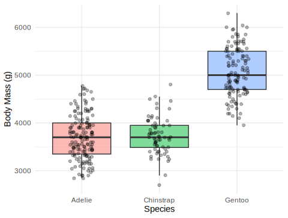
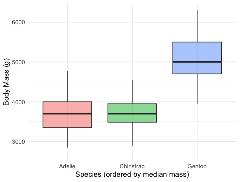
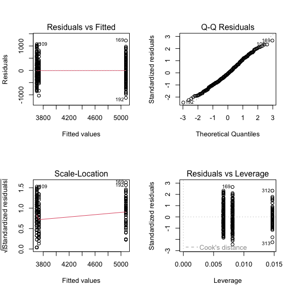

Why not many t-tests, the F-statistic, ordering groups with factors, fitting the model, and checking assumptions
2026-09-03
lm(Y ~ X) with a numeric predictor, checked with plot(model)Note
✅ Transition
The t-test compared two groups. But biology is full of three-or-more group questions — three species, four sites, five treatments. Today’s twist: it’s still lm(Y ~ X) — just with a categorical X instead of a numeric one. That’s one-way ANOVA.
lm()Tools today:
palmerpenguins, tidyverse (includes forcats)car — Levene’s testTextbook:
Naming: models → _model, plots → _plot
This lecture runs in two short chunks. After each chunk you switch to the activity and type the code yourself.
For every code block, do three things:
Note
✅ Why bother? (the evidence)
type = "II" yourself in Anova() is what makes you notice it’s there — paste the line and you’ll never ask why it matters for unbalanced groups.We will cover: why not many t-tests, what ANOVA asks, how F partitions variance, and a first look at the penguin data.
Tip
🖐 After this chunk: Activity Parts 1–3 (load the penguins, explore, state hypotheses).
With 3 groups you’d need 3 t-tests (A–B, A–C, B–C). With 4 groups, 6 tests.
Every test at α = 0.05 has a 5% chance of a false positive. Run several and those risks stack up:
ANOVA asks the question once, holding the overall error rate at 0.05.
Important
The multiple-comparisons problem
More tests = more chances to be fooled by noise. ANOVA is the single, honest test for “do any of these groups differ?”
📖 W&S §15.1 — why a single test
One numeric response (Y) across the levels of one categorical predictor (X).
| Hypothesis | |
|---|---|
| H₀ — null | all group means are equal (\(\mu_1 = \mu_2 = \mu_3\)) |
| Hₐ — alternate | at least one group mean differs |
Note what Hₐ does not say: it does not tell you which group differs — that comes later, from the post-hoc test.
Our question today:
Do the three penguin species differ in body mass?
body_mass_gspecies (Adelie, Chinstrap, Gentoo)\[F = \frac{\text{variance BETWEEN groups}}{\text{variance WITHIN groups}}\]
Big F → the groups are far apart relative to their internal noise → small p-value.
F ≈ 1 → the spread between groups is no bigger than the spread within them → no real difference.
Note
✅ Key idea
ANOVA is a signal-to-noise ratio. The “signal” is the gap between group means; the “noise” is the within-group scatter.
📖 W&S §15.1–15.2
Three species, one lab: body mass (g) of penguins at Palmer Station, Antarctica.
drop_na() removes rows with missing masscount(species) shows the sample size per groupImportant
The groups are unbalanced (different n per species) — that matters when we pick our ANOVA type later.
Note
🔮 Predict first: Before the plot renders — do you expect all three species to differ, or just one? Which species do you think is heaviest?
mass_box_plot <- penguins_df %>%
ggplot(aes(x = species, y = body_mass_g, fill = species)) +
geom_boxplot(alpha = 0.5, outlier.shape = NA) +
geom_point(
position = position_jitter(width = 0.15, seed = 42),
alpha = 0.3, size = 1.5
) +
labs(x = "Species", y = "Body Mass (g)") +
theme_minimal() +
theme(legend.position = "none")
mass_box_plot
Always plot before you test.
📖 R4DS §9 — Layers
species Is a Factor — and Factors Have an Order[1] "factor"[1] "Adelie" "Chinstrap" "Gentoo" ggplot (and lm) draw groups in level orderNote
✅ Key idea
Alphabetical order hides the pattern. Ordering the groups by the thing you are testing — here, body mass — makes the boxplot tell the story at a glance.
forcats (the fct_* family) ships with library(tidyverse).
fct_reorder()penguins_df %>%
mutate(species = fct_reorder(species, body_mass_g, .fun = median)) %>%
ggplot(aes(x = species, y = body_mass_g, fill = species)) +
geom_boxplot(alpha = 0.5, outlier.shape = NA) +
labs(x = "Species (ordered by median mass)", y = "Body Mass (g)") +
theme_minimal() +
theme(legend.position = "none")
fct_reorder(f, x, .fun = median) — reorder factor f by a summary of xmutate(), then plot the resultTip
The full forcats family — rename levels, merge them, lump rare ones — is in Common Code 15 · Factors. Today we only need ordering and, next, the reference level.
Load the penguins, plot body mass by species, reorder the boxplot with fct_reorder(), and write your hypotheses. Predict which species differ before you run anything.
We will cover: fitting the model, then checking normality of the residuals and equal variance across groups.
Tip
🖐 After this chunk: Activity Parts 5–8 (fit, set the reference level, QQ + Shapiro on residuals, Levene’s test).
lm(Y ~ X) — the same syntax as regression (Lecture 11)X is categorical, that linear model is a one-way ANOVANote
✅ Key idea
lm(body_mass_g ~ species) is the exact same function call you used for a numeric predictor in Lecture 11 — only species is categorical this time. R handles the encoding automatically; you don’t write anything differently to get an ANOVA instead of a regression.
📖 W&S §15.2
fct_relevel() (Intercept) speciesChinstrap speciesGentoo
3700.66225 32.42598 1375.35401 (Intercept) speciesAdelie speciesChinstrap
5076.016 -1375.354 -1342.928 lm picks the first factor level as the baseline; every coefficient is a difference from that groupfct_relevel(species, "Gentoo") moves Gentoo to the front → coefficients are now differences from GentooImportant
Releveling changes which comparisons the coefficients show. It does not change the overall F or p-value — the ANOVA question (“do any means differ?”) is the same no matter which group you call the baseline.
Note
🔮 Predict first: plot(mass_model) gives the same four panels you saw in the regression lecture. With ~340 penguins instead of 118 near-perfect paper squares, do you expect the Normal Q-Q panel to track the line as tightly?

Important
Large-sample caution: with ~340 birds, Shapiro-Wilk flags tiny departures as “significant.” Trust the Q-Q panel — if points track the line, you’re fine.
Note
🔮 Predict first: Look back at the boxplot spreads. Predict — will Levene’s test call the variances equal (p > 0.05) or unequal?
Fit lm(body_mass_g ~ species), set the reference level with fct_relevel(), check the residual QQ plot + Shapiro, and run Levene’s test. Predict each result before you run it.
Concepts:
lm() as regressionR skills:
fct_reorder() to order groups by the response; fct_relevel() to set the baselinelm(Y ~ group)plot(model) diagnostics, shapiro.test(residuals())leveneTest()fct_* family → Common Code 15 · FactorsReferences:
Up next — Lecture 14:
aov() and car::Anova(), then emmeans post-hoc to find which species differ, and how to report it